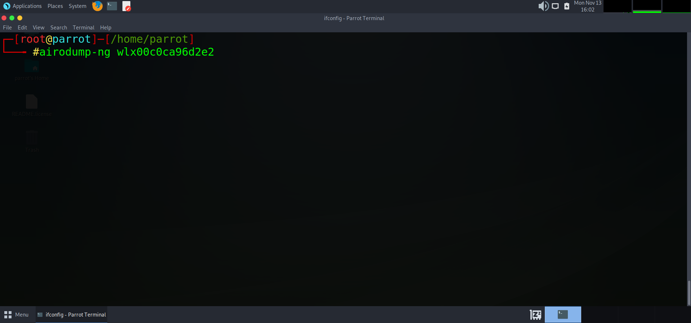

How to Hack WPA2 Networks
Today I am going to show how you can intercept, capture and crack WPA2 passwords from a wifi network. To do this, you will first need to obtain a wireless card that can be put in to monitor mode. There are many brands of wireless cards available, but for this tutorial I will be using an ALPHA Atheros AR9271.
Disclaimer : This is just meant to be informative (and, of course, entertaining). Under no circumstances should you use the hacks you learn here on persons, organizations, or your probable obnoxious neighbor, even if they are influenced by foolish friends.
Once your wireless card is connected to a linux box and drivers are up to date, we want to list out our wireless devices to make sure our computer can see it. For this, we will type lsusb
As you can see, BUS 01 is showing that our ALPHA card is connected. Next we need to verify that our wifi card is in monitor mode. We will type iwconfig to list our card again and display its status. We can see that wlx00c0ca96d2e2 is the name of our card and it is in monitor mode, ready to sniff out wireless signals. If for the chance that your card is not in monitor mode and instead says managed, you can run a command to change it by typing:
airmon-ng wlx00c0ca96d2e2

Now we will take a look at airodump-ng. Airodump-ng is a packet capture utility that captures and saves raw data packets for further analysis. After enabling monitor mode using airmon-ng, you can start capturing packets using airodump. Running the command airodump-ng wlx00c0ca96d2e2 will list the available access points scanning from our card. The ESSID (or SSID) is the name of the wireless network. [Make sure to be in root when running this process]
Once the command is executed, you will see a list form of all the wireless access points (WAPS) that our card is detecting within our range. Press Ctrl+c to stop scanning when you feel ready. We have detected SERANOX_WIFI, which is the WiFi hotspot that we will be attempting to hack for this demonstration. I am going to highlight and copy the findings into a notepad to analyse further.
Once we have the information of the access point, we can then begin the process of targeting that network to de-authenticate a device connected to it. To do this I am going to run: airodump-ng -c1 -w captured-packet -d 72:8F:3D:65:C1:A3 wlx00c0ca96d2e2
Yes! we have obtained a station. A station is a device that is connect to the network we are testing. This device happens to be my firestick connected to my TV and so we will need to perform a de-authentication attack to get the full handshake with the target.

How we will do this is by opening up another tab in our terminal and using the aireplay-ng tool to de-authenticate (kick) the firestick off the network. We will attempt to de-authenticate unlimited times ( –deauth 0) , assign our access point (-a 72:8F:3D:65:C1:A3 ), assign or client, the firestick (-c 80:6D:71:31:59:C9 ) and lastly inputting our wireless card to do it (wlx00c0ca96d2e2)
We can now see our card is trying to de-authenticate the Firestick. How we can check this is by taking a look at our Firesticks connection. If the requests are succeeding, then the device should have successfully been kicked from the network.
Success! we have now been able to intercept the connection between the firestick and the SERANOX_WIFI network. If we navigate back to the previous terminal window we will have a handshake that has been captured between the device and network.
If we list out the current directory that we are in, we can se some captured files that have been saved. The files we want to look at are the .cap files. These contain the information we will need to perform a dictionary attack and obtain the WIFI password using aircrack-ng.
To initiate a brute-force dictionary attack we are going to need a wordlist. Wordlists come in many sizes from megabytes to petabytes! use whatever wordlist you may find suited for the particular thing you are trying to crack and navigate to it. The wordlist I will be using is the “RockYou.txt” wordlist that comes with all Kali Linux and Parrot OS distributions.
Now that we have our wordlist of choice, we are going go ahead type the command below to begin the dictionary attack on the .cap of our choice using aircrack-ng.
aircrack-ng captured-packet-05.cap -w /usr/share/wordlists/rockyou.txt
Success! We just hacked the password to SERANOX_WIFI. Now we will save the password to a notepad along with the SSID and confirm the connection.
Next we will attempt to log into the network using the cracked password.
We have now successfully hacked the WPA2 Wireless Network!